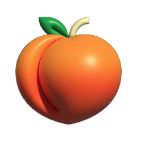
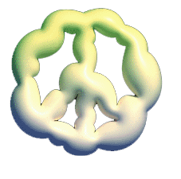

Challenge Positive optimistic adventurer Creative cooperation laughs easily faithful responsible 창조적이고 도전을 즐기는 ui개발자


포트폴리오 작업물
-
National Art Museum
01/국립현대미술관 사이트를 Awwwards등 래퍼런스 사이트를 참고하여 리뉴얼한 PC적응형 사이트입니다.
# PC # SCSS # swiper # jQuery # gsap # renewal -
Apple Watch
02/Apple Watch테마로 Apple, Awwwards등 래퍼런스 사이트를 참고하여 만든 리뉴얼한 PC적응형 사이트 입니다.
# PC # gsap # swiper # jQuery # renewal -
Wanted
03/원티드사이트를 클론코딩한 반응형 사이트이며, json을 이용해 직접 데이터를 담아두고 데이터 바인딩을 통해 컨텐츠와 메뉴를 불러오는 작업을 중점으로한 사이트입니다.
# responsive # swiper # jQuery # jsonSeoul City
05/서울시청사이트를 키보드 탭으로도 이동가능하게 접근성에 중점을 두고 클론코딩한 PC적응형 사이트 입니다.
# PC # 웹표준 # 웹접근성 # jQuery # swiperNaver
06/네이버사이트를 웹접근성과 마크업에 중점을 두고 클론코딩한 PC적응형 사이트 입니다
# PC # 웹표준 # 웹접근성 # jQuery # swiper